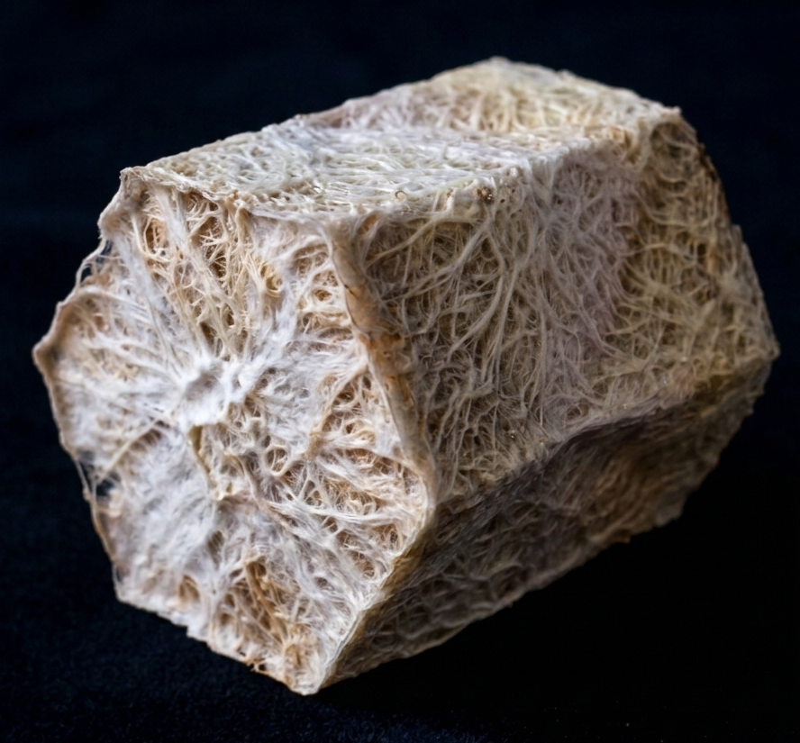
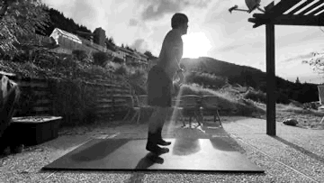
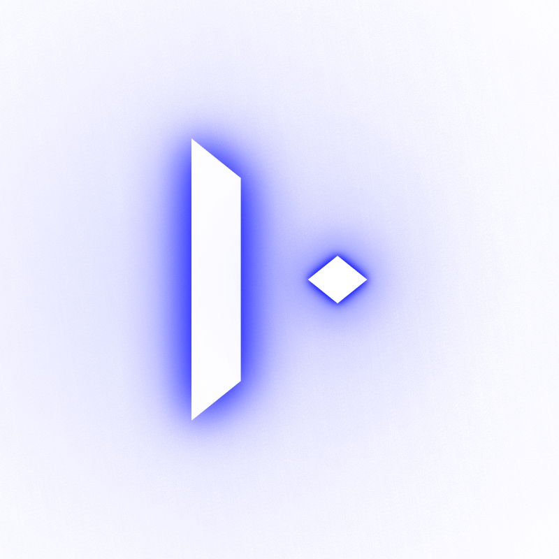
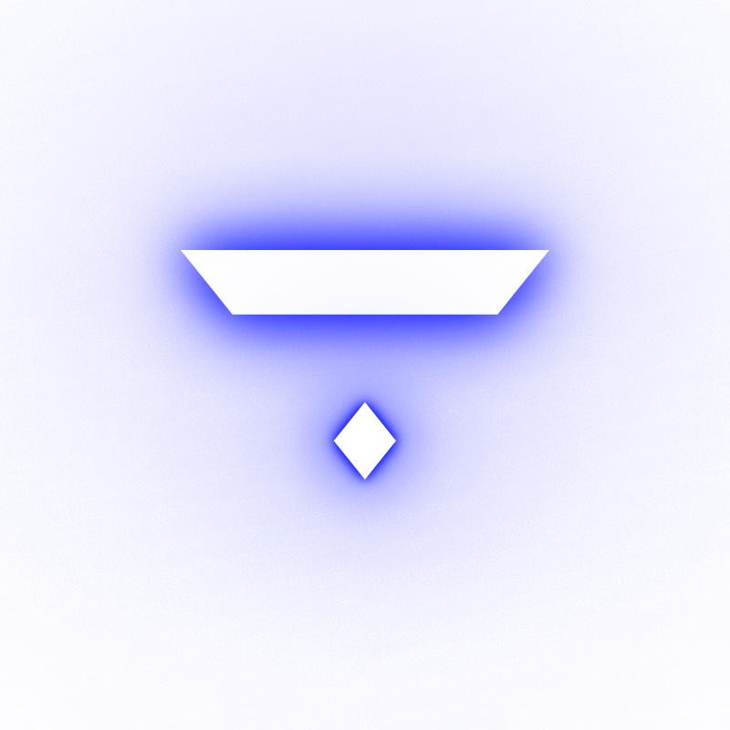
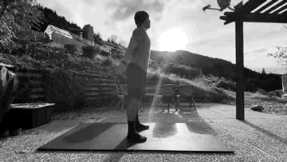
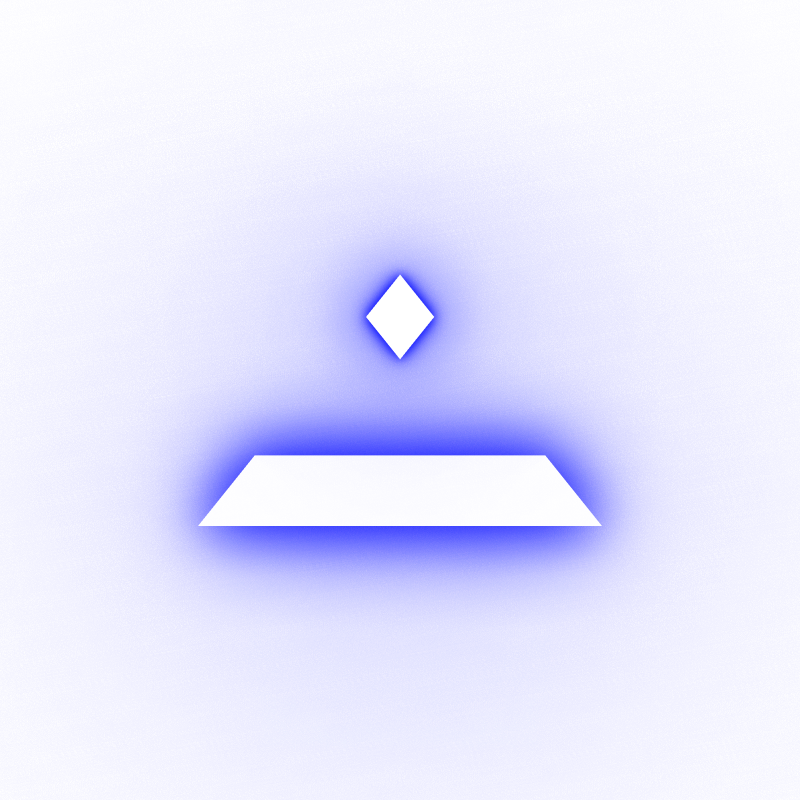
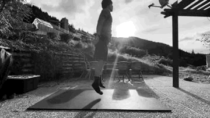
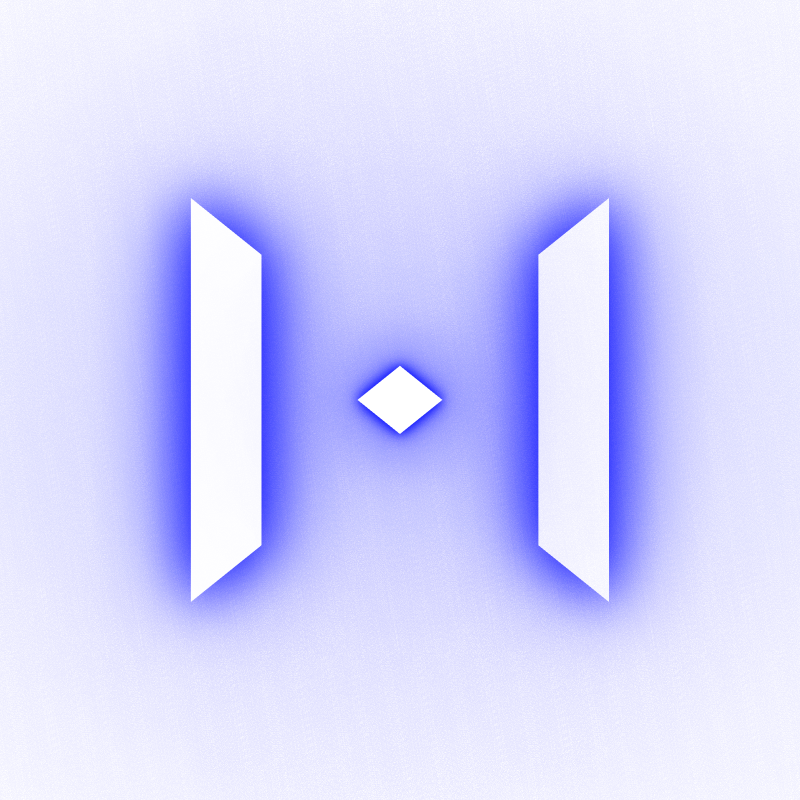

Módulos de manufactura distribuida, validados mediante encriptación biocinética bajo la resonancia del tiempo vertical.
"El pulso que se cristaliza."
Bio-arte vinculado a protocolos de entrenamiento.

Verticality: Solar-Lunar Resonance
CALCULANDO FRECUENCIA...
Encriptación Biocinética
Sincronizando el pulso humano con la resonancia del micelio
Caminar
exhala / Tensión Superficial

Movimientos:

Caer
Inhala / Inmersión
Movimientos:

Levantarse
Imagina / Resiliencia

Movimientos:

SALTAR
Crear / Explosión

Movimientos:

Conversión de bio-datos en zenBeats para sincronización metabólica.
La Z-Strum renuncia a la saturación visual para operar mediante el lenguaje de la frecuencia. Es un bioreactor de manufactura distribuida diseñado para orquestar la unión entre el planeta y el cuerpo.